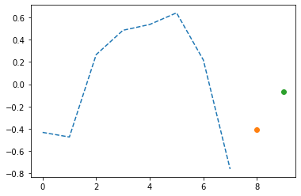
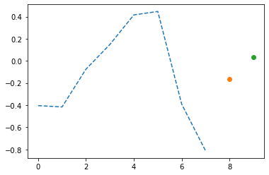
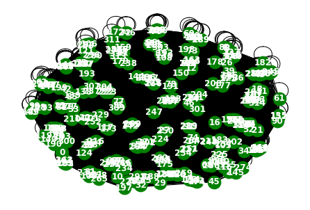
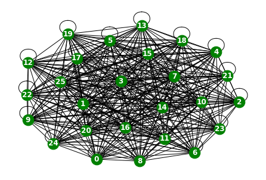
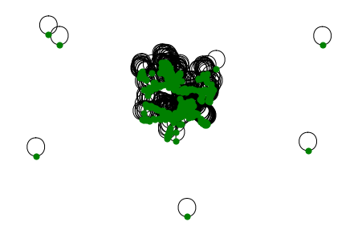
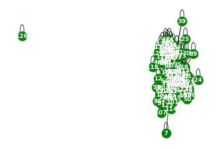
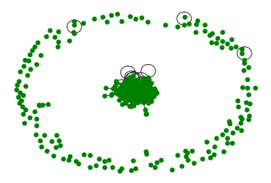
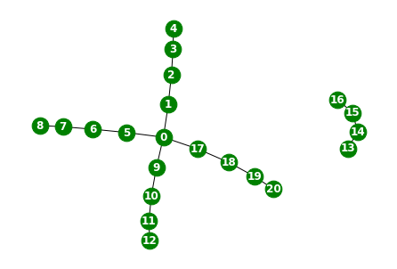

import networkx as nx
import matplotlib.pyplot as plt
import numpy as np
from tqdm import tqdmPyTorch Geometric Temporal Dataset
https://pytorch-geometric-temporal.readthedocs.io/en/latest/modules/dataset.html#module-torch_geometric_temporal.dataset.chickenpox
- 변수 정리
- 그래프 시각화?
- net
RecurrentGCN
import torch
import torch.nn.functional as F
from torch_geometric_temporal.nn.recurrent import GConvGRU
class RecurrentGCN(torch.nn.Module):
def __init__(self, node_features, filters):
super(RecurrentGCN, self).__init__()
self.recurrent = GConvGRU(node_features, filters, 2)
self.linear = torch.nn.Linear(filters, 1)
def forward(self, x, edge_index, edge_weight):
h = self.recurrent(x, edge_index, edge_weight)
h = F.relu(h)
h = self.linear(h)
return hChickenpoxDatasetLoader
A dataset of county level chicken pox cases in Hungary between 2004 and 2014. We made it public during the development of PyTorch Geometric Temporal. The underlying graph is static - vertices are counties and edges are neighbourhoods. Vertex features are lagged weekly counts of the chickenpox cases (we included 4 lags). The target is the weekly number of cases for the upcoming week (signed integers). Our dataset consist of more than 500 snapshots (weeks).
- Nodes : 20 - vertices are counties
-Edges : 102 - edges are neighbourhoods
- Time : 519 - between 2004 and 2014 - per weeks
from torch_geometric_temporal.dataset import ChickenpoxDatasetLoader
from torch_geometric_temporal.signal import temporal_signal_split
loader = ChickenpoxDatasetLoader()
dataset = loader.get_dataset(lags=1)
train_dataset, test_dataset = temporal_signal_split(dataset, train_ratio=1)data=[]
for time, snapshot in enumerate(train_dataset):
data.append([time,snapshot])time519(data[0][1]).x.type,(data[0][1]).edge_index.type,(data[0][1]).edge_attr.type,(data[0][1]).y.type(<function Tensor.type>,
<function Tensor.type>,
<function Tensor.type>,
<function Tensor.type>)max((data[4][1]).x[0])tensor(2.1339)G = nx.Graph()node_list = torch.tensor(range(20)).tolist()G.add_nodes_from(node_list)data[-1][519, Data(x=[20, 1], edge_index=[2, 102], edge_attr=[102], y=[20])]len(data[0][1].edge_index[0])102edge_list=[]
for i in range(519):
for j in range(len(data[0][1].edge_index[0])):
edge_list.append([data[i][1].edge_index[0][j].tolist(),data[i][1].edge_index[1][j].tolist()])G.add_edges_from(edge_list)G.number_of_nodes(),G.number_of_edges()(20, 61)nx.draw(G,with_labels=True,font_weight='bold',node_color='green',node_size=350,font_color='white',width=1)
time별 같은 edge 정보를 가지고 있나 확인
np.where(data[0][1].edge_index != data[10][1].edge_index)(array([], dtype=int64), array([], dtype=int64))loader = ChickenpoxDatasetLoader()
dataset = loader.get_dataset(lags=4)
train_dataset, test_dataset = temporal_signal_split(dataset, train_ratio=0.5)Learn
model = RecurrentGCN(node_features=4, filters=32)
optimizer = torch.optim.Adam(model.parameters(), lr=0.01)
model.train()
for epoch in tqdm(range(50)):
for time, snapshot in enumerate(train_dataset):
y_hat = model(snapshot.x, snapshot.edge_index, snapshot.edge_attr)
cost = torch.mean((y_hat-snapshot.y)**2)
cost.backward()
optimizer.step()
optimizer.zero_grad()100%|██████████| 50/50 [00:53<00:00, 1.06s/it]for time, snapshot in enumerate(train_dataset):
_x = snapshot.x
_edge_index = snapshot.edge_index
_edge_attr = snapshot.edge_attr
_y = snapshot.y
break_x.shapetorch.Size([20, 4])_edge_index.shapetorch.Size([2, 102])_edge_attr.shapetorch.Size([102])_y.shapetorch.Size([20])_x.shapetorch.Size([20, 4])x
- Vertex features are lagged weekly counts of the chickenpox cases (we included 4 lags).
- 주마다 수두가 몇 퍼센트로 발생하는지, 4주(4lags)를 features로 둔 것은 아닐지..!
y
- The target is the weekly number of cases for the upcoming week
- 매주 수두가 몇 퍼센트로 발생하는지?
_x[0:3]tensor([[-1.0814e-03, 2.8571e-02, 3.5474e-01, 2.9544e-01],
[-7.1114e-01, -5.9843e-01, 1.9051e-01, 1.0922e+00],
[-3.2281e+00, -2.2910e-01, 1.6103e+00, -1.5487e+00]])_ytensor([ 0.7106, -0.0725, 2.6099, 1.7870, 0.8024, -0.2614, -0.8370, 1.9674,
-0.4212, 0.1655, 1.2519, 2.3743, 0.7877, 0.4531, -0.1721, -0.0614,
1.0452, 0.3203, -1.3791, 0.0036])PedalMeDatasetLoader
A dataset of PedalMe Bicycle deliver orders in London between 2020 and 2021. We made it public during the development of PyTorch Geometric Temporal. The underlying graph is static - vertices are localities and edges are spatial_connections. Vertex features are lagged weekly counts of the delivery demands (we included 4 lags). The target is the weekly number of deliveries the upcoming week. Our dataset consist of more than 30 snapshots (weeks).
- Nodes : 15 - vertices are localities
-Edges : 225 - edges are spatial_connections
- Time : 33 - between 2020 and 2021 - per weeks
from torch_geometric_temporal.dataset import PedalMeDatasetLoader
from torch_geometric_temporal.signal import temporal_signal_split
loader = PedalMeDatasetLoader()
dataset = loader.get_dataset(lags=1)
train_dataset, test_dataset = temporal_signal_split(dataset, train_ratio=1)data=[]
for time, snapshot in enumerate(train_dataset):
data.append([time,snapshot])time33(data[0][1]).x.shape,(data[0][1]).edge_index.shape,(data[0][1]).edge_attr.shape(torch.Size([15, 1]), torch.Size([2, 225]), torch.Size([225]))G = nx.Graph()node_list = torch.tensor(range(15)).tolist()G.add_nodes_from(node_list)data[-1][33, Data(x=[15, 1], edge_index=[2, 225], edge_attr=[225], y=[15])]edge_list=[]
for i in range(33):
for j in range(len(data[0][1].edge_index[0])):
edge_list.append([data[i][1].edge_index[0][j].tolist(),data[i][1].edge_index[1][j].tolist()])G.add_edges_from(edge_list)G.number_of_nodes(),G.number_of_edges()(15, 120)nx.draw(G,with_labels=True,font_weight='bold',node_color='green',node_size=350,font_color='white',width=1)
time별 같은 edge 정보를 가지고 있나 확인
np.where(data[0][1].edge_index != data[10][1].edge_index)(array([], dtype=int64), array([], dtype=int64))from torch_geometric_temporal.dataset import PedalMeDatasetLoader
loader = PedalMeDatasetLoader()
dataset = loader.get_dataset(lags=4)
train_dataset, test_dataset = temporal_signal_split(dataset, train_ratio=0.5)Learn
model = RecurrentGCN(node_features=4, filters=32)
optimizer = torch.optim.Adam(model.parameters(), lr=0.01)
model.train()
for epoch in tqdm(range(50)):
for time, snapshot in enumerate(train_dataset):
y_hat = model(snapshot.x, snapshot.edge_index, snapshot.edge_attr)
cost = torch.mean((y_hat-snapshot.y)**2)
cost.backward()
optimizer.step()
optimizer.zero_grad()100%|██████████| 50/50 [00:03<00:00, 15.39it/s]for time, snapshot in enumerate(train_dataset):
_x = snapshot.x
_edge_index = snapshot.edge_index
_edge_attr = snapshot.edge_attr
_y = snapshot.y
break_x.shapetorch.Size([15, 4])_edge_index.shapetorch.Size([2, 225])_edge_attr.shapetorch.Size([225])_y.shapetorch.Size([15])_x.shapetorch.Size([15, 4])x
- Vertex features are lagged weekly counts of the delivery demands (we included 4 lags).
- 주마다 배달 수요의 수가 얼마나 될지 percentage로, t-4시점까지?
y
- The target is the weekly number of deliveries the
upcomingweek. Our dataset consist of more than 30 snapshots (weeks). - 그 다음주에 배달의 수가 몇 퍼센트로 발생할지?
_x[0:3]tensor([[ 3.0574, -0.0477, -0.3076, 0.2437],
[ 3.2126, 0.1240, 0.0764, 0.5582],
[ 1.9071, -0.8883, 1.5280, -0.7184]])_ytensor([-0.2710, 0.0888, 0.4733, 0.0907, -0.3129, 0.1184, 0.5886, -0.6571,
0.2647, 0.2338, 0.1720, 0.5720, -0.9568, -0.4138, -0.5271])WikiMathsDatasetLoader
A dataset of vital mathematics articles from Wikipedia. We made it public during the development of PyTorch Geometric Temporal. The underlying graph is static - vertices are Wikipedia pages and edges are links between them. The graph is directed and weighted. Weights represent the number of links found at the source Wikipedia page linking to the target Wikipedia page. The target is the daily user visits to the Wikipedia pages between March 16th 2019 and March 15th 2021 which results in 731 periods.
- Nodes : 1068 - vertices are Wikipedia pages
-Edges : 27079 - edges are links between them
- Time : 722 - Wikipedia pages between March 16th 2019 and March 15th 2021 - per weeks
from torch_geometric_temporal.dataset import WikiMathsDatasetLoader
from torch_geometric_temporal.signal import temporal_signal_split
loader = WikiMathsDatasetLoader()
dataset = loader.get_dataset()
train_dataset, test_dataset = temporal_signal_split(dataset, train_ratio=1)data=[]
for time, snapshot in enumerate(train_dataset):
data.append([time,snapshot])time722(data[0][1]).x.shape,(data[0][1]).edge_index.shape,(data[0][1]).edge_attr.shape(torch.Size([1068, 8]), torch.Size([2, 27079]), torch.Size([27079]))(data[10][1]).xtensor([[ 0.4972, 0.6838, 0.7211, ..., -0.8513, 0.1881, 1.3820],
[ 0.5457, 0.6016, 0.7071, ..., -0.4599, -0.6089, -0.0626],
[ 0.6305, 1.1404, 0.8779, ..., -0.5370, 0.7422, 0.3862],
...,
[ 0.8699, 0.5451, 1.9254, ..., -0.8351, 0.3828, 0.3828],
[ 0.2451, 0.9629, 1.0526, ..., -0.9213, 0.8731, -0.1138],
[ 0.0200, -0.0871, 0.2342, ..., -0.4712, 0.0717, 0.2859]])G = nx.Graph()node_list = torch.tensor(range(1068)).tolist()G.add_nodes_from(node_list)edge_list=[]
for i in range(722):
for j in range(len(data[0][1].edge_index[0])):
edge_list.append([data[i][1].edge_index[0][j].tolist(),data[i][1].edge_index[1][j].tolist()])G.add_edges_from(edge_list)G.number_of_nodes(),G.number_of_edges()(1068, 27079)nx.draw(G,node_color='green',node_size=100,width=1)
time별 같은 edge 정보를 가지고 있나 확인
np.where(data[0][1].edge_index != data[10][1].edge_index)(array([], dtype=int64), array([], dtype=int64))np.where(data[11][1].edge_index != data[10][1].edge_index)(array([], dtype=int64), array([], dtype=int64))np.where(data[11][1].edge_index != data[20][1].edge_index)(array([], dtype=int64), array([], dtype=int64))https://www.kaggle.com/code/mapologo/loading-wikipedia-math-essentials
from torch_geometric_temporal.dataset import WikiMathsDatasetLoader
loader = WikiMathsDatasetLoader()
dataset = loader.get_dataset(lags=8)
train_dataset, test_dataset = temporal_signal_split(dataset, train_ratio=0.5)Learn
model = RecurrentGCN(node_features=8, filters=32)
optimizer = torch.optim.Adam(model.parameters(), lr=0.01)
model.train()
for epoch in tqdm(range(50)):
for time, snapshot in enumerate(train_dataset):
y_hat = model(snapshot.x, snapshot.edge_index, snapshot.edge_attr)
cost = torch.mean((y_hat-snapshot.y)**2)
cost.backward()
optimizer.step()
optimizer.zero_grad()100%|██████████| 50/50 [09:28<00:00, 11.37s/it]for time, snapshot in enumerate(train_dataset):
_x = snapshot.x
_edge_index = snapshot.edge_index
_edge_attr = snapshot.edge_attr
_y = snapshot.y
break_x.shapetorch.Size([1068, 8])_edge_index.shapetorch.Size([2, 27079])어떤 페이지에 refer가 되었는지
_edge_index[0][:5],_edge_index[1][:5](tensor([0, 0, 0, 0, 0]), tensor([1, 2, 3, 4, 5]))_edge_attr.shapetorch.Size([27079])_edge_attr[:5]tensor([1., 4., 2., 2., 5.])- Weights represent the number of links found at the source Wikipedia page linking to the target Wikipedia page.
가중치는 엣지별 한 페이지에 refer되었는지, 몇 번 되었나 수 나옴
_y.shapetorch.Size([1068])_x.shapetorch.Size([1068, 8])x
- lag 를 몇으로 지정하느냐에 따라 다르게 추출
y
- The target is the daily user visits to the Wikipedia pages between March 16th 2019 and March 15th 2021 which results in 731 periods.
- 매일 위키피디아 해당 페이지에 몇 명의 유저가 방문하는지!
- 음수가 왜 나오지..
_x[0:3]tensor([[-0.4323, -0.4739, 0.2659, 0.4844, 0.5367, 0.6412, 0.2179, -0.7617],
[-0.4041, -0.4165, -0.0751, 0.1484, 0.4153, 0.4464, -0.3916, -0.8137],
[-0.3892, 0.0634, 0.5913, 0.5370, 0.4646, 0.2776, -0.0724, -0.8116]])_y[:3]tensor([-0.4067, -0.1620, -0.4043])y_hat[:3].datatensor([[-0.0648],
[ 0.0314],
[-1.0724]])plt.plot(_x[0],'--')
plt.plot(8,_y[0],'o')
plt.plot(9,y_hat[0].data,'o')
plt.plot(_x[1],'--')
plt.plot(8,_y[1],'o')
plt.plot(9,y_hat[1].data,'o')
WindmillOutputLargeDatasetLoader
Hourly energy output of windmills from a European country for more than 2 years. Vertices represent 319 windmills and weighted edges describe the strength of relationships. The target variable allows for regression tasks.
- Nodes : 319 - vertices represent 319 windmills
-Edges : 101761 - weighted edges describe the strength of relationships.
- Time : 17470 - more than 2 years
from torch_geometric_temporal.dataset import WindmillOutputLargeDatasetLoader
from torch_geometric_temporal.signal import temporal_signal_split
loader = WindmillOutputLargeDatasetLoader()
dataset = loader.get_dataset(lags=1)
train_dataset, test_dataset = temporal_signal_split(dataset, train_ratio=1)data=[]
for time, snapshot in enumerate(train_dataset):
data.append([time,snapshot])time17470(data[0][1]).x.shape,(data[0][1]).edge_index.shape,(data[0][1]).edge_attr.shape(torch.Size([319, 1]), torch.Size([2, 101761]), torch.Size([101761]))G = nx.Graph()node_list = torch.tensor(range(319)).tolist()G.add_nodes_from(node_list)data[-1][17470, Data(x=[319, 1], edge_index=[2, 101761], edge_attr=[101761], y=[319])]time이 너무 많아서 일부만 시각화함!!
edge_list=[]
for i in range(1000):
for j in range(len(data[0][1].edge_index[0])):
edge_list.append([data[i][1].edge_index[0][j].tolist(),data[i][1].edge_index[1][j].tolist()])G.add_edges_from(edge_list)G.number_of_nodes(),G.number_of_edges()(319, 51040)nx.draw(G,with_labels=True,font_weight='bold',node_color='green',node_size=350,font_color='white',width=1)
time별 같은 edge 정보를 가지고 있나 확인
np.where(data[0][1].edge_index != data[10][1].edge_index)(array([], dtype=int64), array([], dtype=int64))from torch_geometric_temporal.dataset import WindmillOutputLargeDatasetLoader
loader = WindmillOutputLargeDatasetLoader()
dataset = loader.get_dataset(lags=4)
train_dataset, test_dataset = temporal_signal_split(dataset, train_ratio=0.5)Learn
model = RecurrentGCN(node_features=4, filters=32)
optimizer = torch.optim.Adam(model.parameters(), lr=0.01)
model.train()
for epoch in tqdm(range(5)):
for time, snapshot in enumerate(train_dataset):
y_hat = model(snapshot.x, snapshot.edge_index, snapshot.edge_attr)
cost = torch.mean((y_hat-snapshot.y)**2)
cost.backward()
optimizer.step()
optimizer.zero_grad()for time, snapshot in enumerate(train_dataset):
_x = snapshot.x
_edge_index = snapshot.edge_index
_edge_attr = snapshot.edge_attr
_y = snapshot.y
break_x.shape_edge_index.shape_edge_attr.shape_y.shape_x.shapex
y
- The target variable allows for regression tasks.
_x[0:3]_yWindmillOutputMediumDatasetLoader
Hourly energy output of windmills from a European country for more than 2 years. Vertices represent 26 windmills and weighted edges describe the strength of relationships. The target variable allows for regression tasks.
- Nodes : 26 - vertices represent 26 windmills
-Edges : 225 - weighted edges describe the strength of relationships
- Time : 676 - more than 2 years
from torch_geometric_temporal.dataset import WindmillOutputMediumDatasetLoader
from torch_geometric_temporal.signal import temporal_signal_split
loader = WindmillOutputMediumDatasetLoader()
dataset = loader.get_dataset(lags=1)
train_dataset, test_dataset = temporal_signal_split(dataset, train_ratio=1)data=[]
for time, snapshot in enumerate(train_dataset):
data.append([time,snapshot])time17470(data[0][1]).x.shape,(data[0][1]).edge_index.shape,(data[0][1]).edge_attr.shape(torch.Size([26, 1]), torch.Size([2, 676]), torch.Size([676]))G = nx.Graph()node_list = torch.tensor(range(26)).tolist()G.add_nodes_from(node_list)data[-1][17470, Data(x=[26, 1], edge_index=[2, 676], edge_attr=[676], y=[26])]edge_list=[]
for i in range(17463):
for j in range(len(data[0][1].edge_index[0])):
edge_list.append([data[i][1].edge_index[0][j].tolist(),data[i][1].edge_index[1][j].tolist()])G.add_edges_from(edge_list)G.number_of_nodes(),G.number_of_edges()(26, 351)nx.draw(G,with_labels=True,font_weight='bold',node_color='green',node_size=350,font_color='white',width=1)
time별 같은 edge 정보를 가지고 있나 확인
np.where(data[0][1].edge_index != data[10][1].edge_index)(array([], dtype=int64), array([], dtype=int64))WindmillOutputSmallDatasetLoader
Hourly energy output of windmills from a European country for more than 2 years. Vertices represent 11 windmills and weighted edges describe the strength of relationships. The target variable allows for regression tasks.
- Nodes : 11 - vertices represent 11 windmills
-Edges : 121 - weighted edges describe the strength of relationships
- Time : 17470 - more than 2 years
from torch_geometric_temporal.dataset import WindmillOutputSmallDatasetLoader
from torch_geometric_temporal.signal import temporal_signal_split
loader = WindmillOutputSmallDatasetLoader()
dataset = loader.get_dataset()
train_dataset, test_dataset = temporal_signal_split(dataset, train_ratio=1)data=[]
for time, snapshot in enumerate(train_dataset):
data.append([time,snapshot])time17463(data[0][1]).x.shape,(data[0][1]).edge_index.shape,(data[0][1]).edge_attr.shape(torch.Size([11, 8]), torch.Size([2, 121]), torch.Size([121]))data[-1][17463, Data(x=[11, 8], edge_index=[2, 121], edge_attr=[121], y=[11])]G = nx.Graph()node_list = torch.tensor(range(11)).tolist()G.add_nodes_from(node_list)edge_list=[]
for i in range(17463):
for j in range(len(data[0][1].edge_index[0])):
edge_list.append([data[i][1].edge_index[0][j].tolist(),data[i][1].edge_index[1][j].tolist()])G.add_edges_from(edge_list)G.number_of_nodes(),G.number_of_edges()(11, 66)nx.draw(G,with_labels=True,font_weight='bold',node_color='green',node_size=350,font_color='white',width=1)
time별 같은 edge 정보를 가지고 있나 확인
np.where(data[0][1].edge_index != data[10][1].edge_index)(array([], dtype=int64), array([], dtype=int64))METRLADatasetLoader_real world traffic dataset
A traffic forecasting dataset based on Los Angeles Metropolitan traffic conditions. The dataset contains traffic readings collected from 207 loop detectors on highways in Los Angeles County in aggregated 5 minute intervals for 4 months between March 2012 to June 2012.
https://arxiv.org/pdf/1707.01926.pdf
- Nodes : 15 - vertices are localities
-Edges : 225 - edges are spatial_connections
- Time : 33 - between 2020 and 2021 - per weeks
from torch_geometric_temporal.dataset import METRLADatasetLoader
from torch_geometric_temporal.signal import temporal_signal_split
loader = METRLADatasetLoader()
dataset = loader.get_dataset()
train_dataset, test_dataset = temporal_signal_split(dataset, train_ratio=1)data=[]
for time, snapshot in enumerate(train_dataset):
data.append([time,snapshot])time34248(data[0][1]).x.shape,(data[0][1]).edge_index.shape,(data[0][1]).edge_attr.shape(torch.Size([207, 2, 12]), torch.Size([2, 1722]), torch.Size([1722]))data[-1][34248,
Data(x=[207, 2, 12], edge_index=[2, 1722], edge_attr=[1722], y=[207, 12])]G = nx.Graph()node_list = torch.tensor(range(20)).tolist()G.add_nodes_from(node_list)edge_list=[]
for i in range(1000):
for j in range(len(data[0][1].edge_index[0])):
edge_list.append([data[i][1].edge_index[0][j].tolist(),data[i][1].edge_index[1][j].tolist()])G.add_edges_from(edge_list)G.number_of_nodes(),G.number_of_edges()(207, 1520)nx.draw(G,with_labels=True,font_weight='bold',node_color='green',node_size=350,font_color='white',width=1)
time별 같은 edge 정보를 가지고 있나 확인
np.where(data[0][1].edge_index != data[10][1].edge_index)(array([], dtype=int64), array([], dtype=int64))from torch_geometric_temporal.dataset import METRLADatasetLoader
loader = METRLADatasetLoader()
dataset = loader.get_dataset()
train_dataset, test_dataset = temporal_signal_split(dataset, train_ratio=0.5)
Note
lags option 없어서 error 뜸 : get_dataset() got an unexpected keyword argument ‘lags’
RecurrentGCN
import torch
import torch.nn.functional as F
from torch_geometric_temporal.nn.recurrent import GConvGRU
class RecurrentGCN(torch.nn.Module):
def __init__(self, node_features, filters):
super(RecurrentGCN, self).__init__()
self.recurrent = GConvGRU(node_features, filters, 2)
self.linear = torch.nn.Linear(filters, 1)
def forward(self, x, edge_index, edge_weight):
h = self.recurrent(x, edge_index, edge_weight)
h = F.relu(h)
h = self.linear(h)
return hLearn
model = RecurrentGCN(node_features=1, filters=32)
optimizer = torch.optim.Adam(model.parameters(), lr=0.01)
model.train()
for epoch in tqdm(range(50)):
for time, snapshot in enumerate(train_dataset):
y_hat = model(snapshot.x, snapshot.edge_index, snapshot.edge_attr)
cost = torch.mean((y_hat-snapshot.y)**2)
cost.backward()
optimizer.step()
optimizer.zero_grad()for time, snapshot in enumerate(train_dataset):
_x = snapshot.x
_edge_index = snapshot.edge_index
_edge_attr = snapshot.edge_attr
_y = snapshot.y
break_x.shapetorch.Size([207, 2, 12])- node 207개, traffic sensor 2개
_edge_index.shapetorch.Size([2, 1722])_edge_attr.shapetorch.Size([1722])_y.shapetorch.Size([207, 12])_x.shapetorch.Size([207, 2, 12])_x[0]tensor([[ 0.5332, 0.4486, 0.5146, -2.6522, -2.6522, 0.1847, 0.6383, 0.4961,
0.7497, 0.4899, 0.5751, 0.4280],
[-1.7292, -1.7171, -1.7051, -1.6930, -1.6810, -1.6689, -1.6569, -1.6448,
-1.6328, -1.6207, -1.6087, -1.5966]])_y[0]tensor([0.3724, 0.2452, 0.4961, 0.6521, 0.1126, 0.5311, 0.5091, 0.4713, 0.4218,
0.3909, 0.4761, 0.5641])PemsBayDatasetLoader
A traffic forecasting dataset as described in Diffusion Convolution Layer Paper.
This traffic dataset is collected by California Transportation Agencies (CalTrans) Performance Measurement System (PeMS). It is represented by a network of 325 traffic sensors in the Bay Area with 6 months of traffic readings ranging from Jan 1st 2017 to May 31th 2017 in 5 minute intervals.
- Nodes : 325 - vertices are sensors
-Edges : 2694 - weighted edges are between seonsor paris measured by the road nretwork distance
- Time : 52081 - 6 months of traffic readings ranging from Jan 1st 2017 to May 31th 2017 in 5 minute intervals
from torch_geometric_temporal.dataset import PemsBayDatasetLoader
from torch_geometric_temporal.signal import temporal_signal_split
loader = PemsBayDatasetLoader()
dataset = loader.get_dataset()
train_dataset, test_dataset = temporal_signal_split(dataset, train_ratio=1)data=[]
for time, snapshot in enumerate(train_dataset):
data.append([time,snapshot])time52081(data[0][1]).x.shape,(data[0][1]).edge_index.shape,(data[0][1]).edge_attr.shape(torch.Size([325, 2, 12]), torch.Size([2, 2694]), torch.Size([2694]))G = nx.Graph()node_list = torch.tensor(range(325)).tolist()data[-1][52081,
Data(x=[325, 2, 12], edge_index=[2, 2694], edge_attr=[2694], y=[325, 2, 12])]G.add_nodes_from(node_list)edge_list=[]
for i in range(1000):
for j in range(len(data[0][1].edge_index[0])):
edge_list.append([data[i][1].edge_index[0][j].tolist(),data[i][1].edge_index[1][j].tolist()])G.add_edges_from(edge_list)G.number_of_nodes(),G.number_of_edges()(325, 2404)nx.draw(G,node_color='green',node_size=50,font_color='white',width=1)
time별 같은 edge 정보를 가지고 있나 확인
np.where(data[0][1].edge_index != data[10][1].edge_index)(array([], dtype=int64), array([], dtype=int64))EnglandCovidDatasetLoader
A dataset of mobility and history of reported cases of COVID-19 in England NUTS3 regions, from 3 March to 12 of May. The dataset is segmented in days and the graph is directed and weighted. The graph indicates how many people moved from one region to the other each day, based on Facebook Data For Good disease prevention maps. The node features correspond to the number of COVID-19 cases in the region in the past window days. The task is to predict the number of cases in each node after 1 day.
https://arxiv.org/pdf/2009.08388.pdf
- Nodes : 129 - vertices are correspond to the number of COVID-19 cases in the region in the past window days.
-Edges : 2158 - the spatial edges capture county-to-county movement at a specific date, and a county is connected to a number of past instances of itself with temporal edges.
- Time : 52 - from 3 March to 12 of May
from torch_geometric_temporal.dataset import EnglandCovidDatasetLoader
from torch_geometric_temporal.signal import temporal_signal_split
loader = EnglandCovidDatasetLoader()
dataset = loader.get_dataset()
train_dataset, test_dataset = temporal_signal_split(dataset, train_ratio=1)data=[]
for time, snapshot in enumerate(train_dataset):
data.append([time,snapshot])time52(data[0][1]).x.shape,(data[0][1]).edge_index.shape,(data[0][1]).edge_attr.shape(torch.Size([129, 8]), torch.Size([2, 2158]), torch.Size([2158]))G = nx.Graph()node_list = torch.tensor(range(129)).tolist()G.add_nodes_from(node_list)data[-1][52, Data(x=[129, 8], edge_index=[2, 1424], edge_attr=[1424], y=[129])]len(data[0][1].edge_index[0])2158edge_list=[]
for i in range(52):
for j in range(100):
edge_list.append([data[i][1].edge_index[0][j].tolist(),data[i][1].edge_index[1][j].tolist()])G.add_edges_from(edge_list)G.number_of_nodes(),G.number_of_edges()(129, 1230)nx.draw(G,with_labels=True,font_weight='bold',node_color='green',node_size=350,font_color='white',width=1)
time별 같은 edge 정보를 가지고 있나 확인
np.where(data[2][1].edge_index !=data[2][1].edge_index)(array([], dtype=int64), array([], dtype=int64))MontevideoBusDatasetLoader
A dataset of inflow passenger at bus stop level from Montevideo city. This dataset comprises hourly inflow passenger data at bus stop level for 11 bus lines during October 2020 from Montevideo city (Uruguay). The bus lines selected are the ones that carry people to the center of the city and they load more than 25% of the total daily inflow traffic. Vertices are bus stops, edges are links between bus stops when a bus line connects them and the weight represent the road distance. The target is the passenger inflow. This is a curated dataset made from different data sources of the Metropolitan Transportation System (STM) of Montevideo.
- Nodes : 675 - vertices are bus stops
-Edges : 690 - edges are links between bus stops when a bus line connects them and the weight represent the road distance
- Time : 739 - hourly inflow passenger data at bus stop level for 11 bus lines during October 2020 from Montevideo city (Uruguay).
from torch_geometric_temporal.dataset import MontevideoBusDatasetLoader
from torch_geometric_temporal.signal import temporal_signal_split
loader = MontevideoBusDatasetLoader()
dataset = loader.get_dataset()
train_dataset, test_dataset = temporal_signal_split(dataset, train_ratio=1)data=[]
for time, snapshot in enumerate(train_dataset):
data.append([time,snapshot])time739(data[0][1]).x.shape,(data[0][1]).edge_index.shape,(data[0][1]).edge_attr.shape(torch.Size([675, 4]), torch.Size([2, 690]), torch.Size([690]))G = nx.Graph()node_list = torch.tensor(range(675)).tolist()G.add_nodes_from(node_list)edge_list=[]
for i in range(739):
for j in range(len(data[0][1].edge_index[0])):
edge_list.append([data[i][1].edge_index[0][j].tolist(),data[i][1].edge_index[1][j].tolist()])G.add_edges_from(edge_list)G.number_of_nodes(),G.number_of_edges()(675, 690)nx.draw(G,node_color='green',node_size=50,font_color='white',width=1)
time별 같은 edge 정보를 가지고 있나 확인
np.where(data[0][1].edge_index != data[10][1].edge_index)(array([], dtype=int64), array([], dtype=int64))TwitterTennisDatasetLoader
Twitter mention graphs related to major tennis tournaments from 2017. Nodes are Twitter accounts and edges are mentions between them. Each snapshot contains the graph induced by the most popular nodes of the original dataset. Node labels encode the number of mentions received in the original dataset for the next snapshot. Read more on the original Twitter data in the ‘Temporal Walk Based Centrality Metric for Graph Streams’ paper.
- Nodes : 1000 - vertices are Twitter accounts
-Edges : 119 - edges are mentions between them
- Time : 52081 - Twitter mention graphs related to major tennis tournaments from 2017
from torch_geometric_temporal.dataset import TwitterTennisDatasetLoader
from torch_geometric_temporal.signal import temporal_signal_split
loader = TwitterTennisDatasetLoader()
dataset = loader.get_dataset()
train_dataset, test_dataset = temporal_signal_split(dataset, train_ratio=1)data=[]
for time, snapshot in enumerate(train_dataset):
data.append([time,snapshot])time119(data[0][1]).x.shape,(data[0][1]).edge_index.shape,(data[0][1]).edge_attr.shape(torch.Size([1000, 16]), torch.Size([2, 89]), torch.Size([89]))data[0][1].x[0]tensor([0., 0., 0., 0., 1., 1., 0., 0., 0., 0., 0., 0., 0., 0., 0., 0.])data[0][1].edge_index[0]tensor([ 42, 909, 909, 909, 233, 233, 450, 256, 256, 256, 256, 256, 434, 434,
434, 233, 233, 233, 233, 233, 233, 233, 9, 9, 355, 84, 84, 84,
84, 140, 140, 140, 140, 0, 140, 238, 238, 238, 649, 875, 875, 234,
73, 73, 341, 341, 341, 341, 341, 417, 293, 991, 74, 581, 282, 162,
144, 383, 383, 135, 135, 910, 910, 910, 910, 910, 87, 87, 87, 87,
9, 9, 934, 934, 162, 225, 42, 911, 911, 911, 911, 911, 911, 911,
911, 498, 498, 64, 435])data[0][1].edge_attrtensor([2., 1., 1., 1., 1., 1., 1., 1., 1., 1., 1., 1., 1., 1., 1., 1., 1., 1.,
1., 1., 1., 1., 1., 1., 1., 1., 1., 1., 1., 1., 1., 1., 1., 1., 1., 1.,
1., 1., 1., 1., 1., 1., 1., 1., 1., 1., 1., 1., 2., 1., 1., 1., 1., 1.,
1., 1., 1., 1., 1., 1., 1., 1., 1., 1., 2., 2., 1., 1., 1., 1., 1., 1.,
1., 1., 1., 1., 3., 2., 1., 1., 1., 1., 2., 2., 2., 1., 1., 1., 3.])G = nx.Graph()node_list = torch.tensor(range(1000)).tolist()G.add_nodes_from(node_list)edge_list=[]
for i in range(119):
for j in range(40):
edge_list.append([data[i][1].edge_index[0][j].tolist(),data[i][1].edge_index[1][j].tolist()])G.add_edges_from(edge_list)G.number_of_nodes(),G.number_of_edges()(1000, 2819)nx.draw(G,node_color='green',node_size=50,width=1)
time별 같은 edge 정보를 가지고 있나 확인
len(data[2][1].edge_index[0])67len(data[0][1].edge_index[0])89다름..
MTMDatasetLoader
A dataset of Methods-Time Measurement-1 (MTM-1) motions, signalled as consecutive video frames of 21 3D hand keypoints, acquired via MediaPipe Hands from RGB-Video material. Vertices are the finger joints of the human hand and edges are the bones connecting them. The targets are manually labeled for each frame, according to one of the five MTM-1 motions (classes ): Grasp, Release, Move, Reach, Position plus a negative class for frames without graph signals (no hand present). This is a classification task where consecutive frames need to be assigned to the corresponding class . The data x is returned in shape (3, 21, T), the target is returned one-hot-encoded in shape (T, 6).
- Nodes : 325 - vertices are are the finger joints of the human hand
-Edges : 19 - edges are the bones connecting them
- Time : 14452
from torch_geometric_temporal.dataset import MTMDatasetLoader
from torch_geometric_temporal.signal import temporal_signal_split
loader = MTMDatasetLoader()
dataset = loader.get_dataset()
train_dataset, test_dataset = temporal_signal_split(dataset, train_ratio=1)data=[]
for time, snapshot in enumerate(train_dataset):
data.append([time,snapshot])time14452(data[0][1]).x.shape,(data[0][1]).edge_index.shape,(data[0][1]).edge_attr.shape(torch.Size([3, 21, 16]), torch.Size([2, 19]), torch.Size([19]))G = nx.Graph()node_list = torch.tensor(range(21)).tolist()G.add_nodes_from(node_list)edge_list=[]
for i in range(14452):
for j in range(len(data[0][1].edge_index[0])):
edge_list.append([data[i][1].edge_index[0][j].tolist(),data[i][1].edge_index[1][j].tolist()])G.add_edges_from(edge_list)G.number_of_nodes(),G.number_of_edges()(21, 19)nx.draw(G,with_labels=True,font_weight='bold',node_color='green',node_size=350,font_color='white',width=1)
time별 같은 edge 정보를 가지고 있나 확인
np.where(data[0][1].edge_index != data[12][1].edge_index)(array([], dtype=int64), array([], dtype=int64))